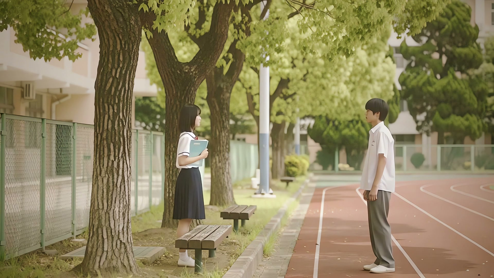
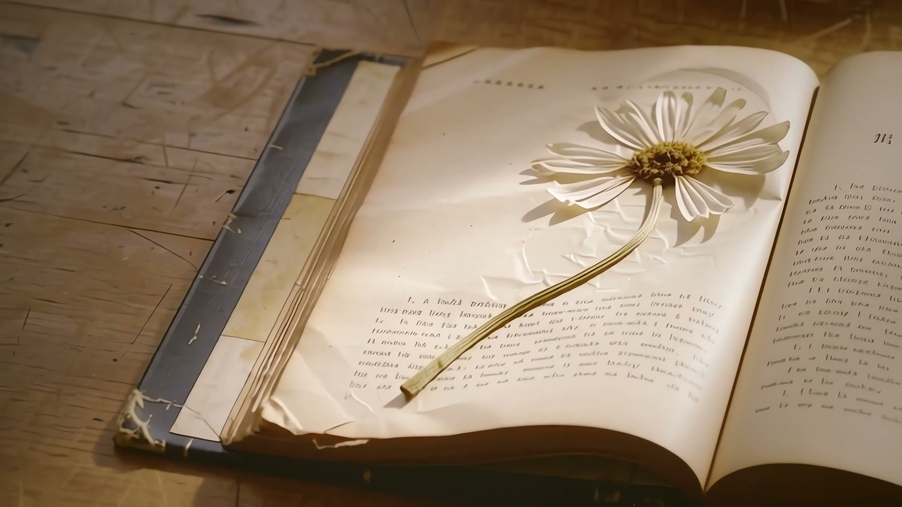
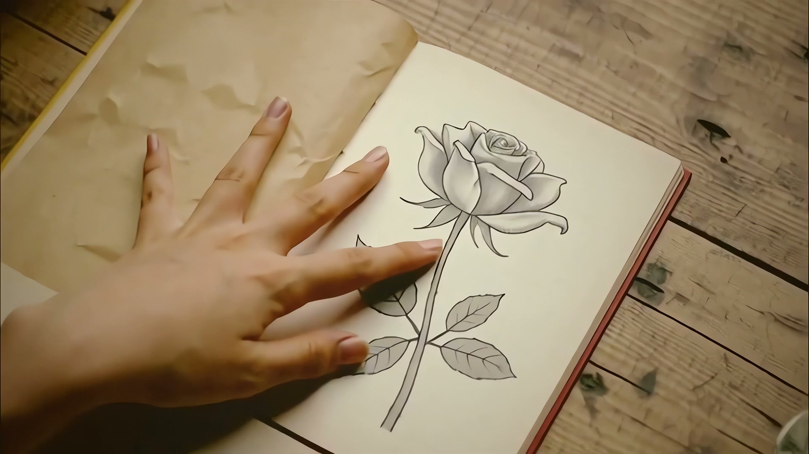
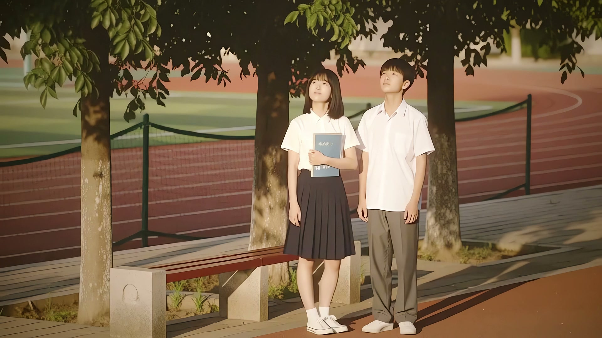
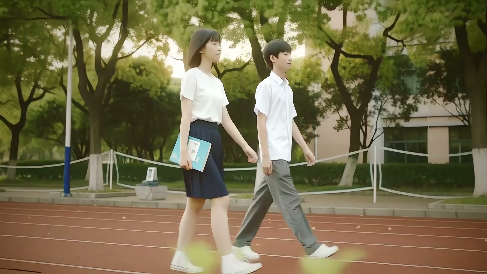
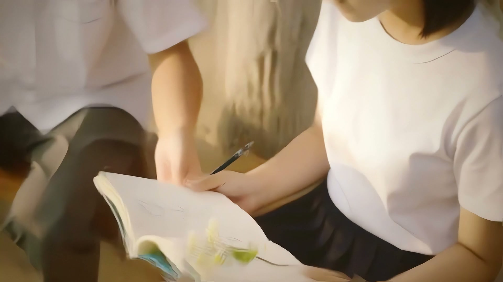
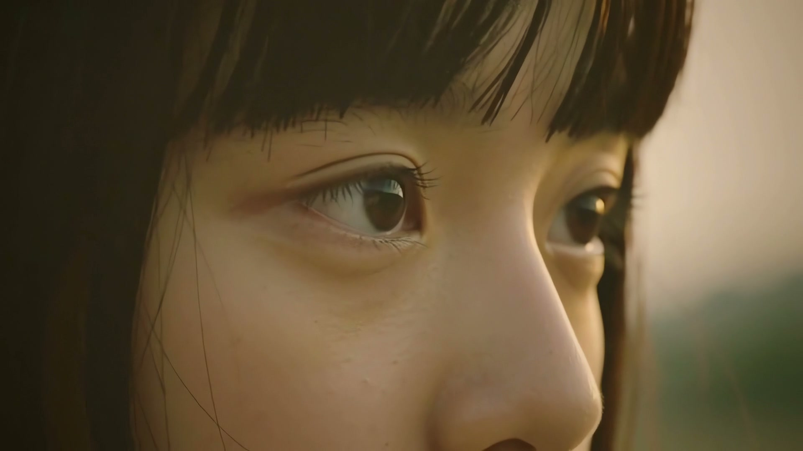
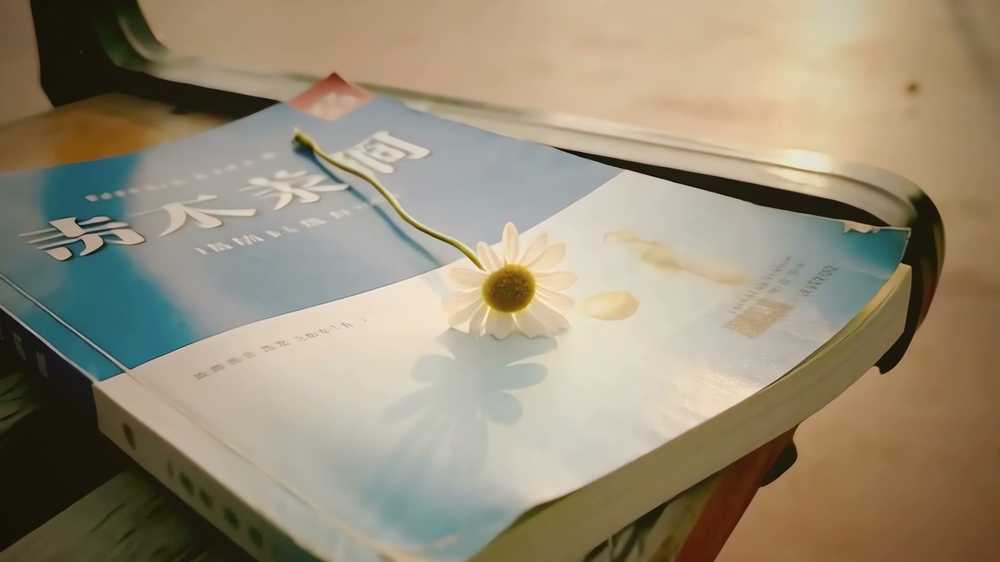

第三棵梧桐 THE THIRD PLANE TREE
84.000 s ／ 2016 帧 ／ H.264 CRF16 ／ AAC 256k 48 kHz ／ −12.9 LUFS
三棵梧桐下的球场，一本褪蓝色的旧课本，一朵压干的雏菊，和一段始终没有说出口的告别。同一处球场的阳面与黄昏只换光不换机位，两个人从一个球场的两端走到同一条长椅上。
全片由 MiniMax H3 逐镜生成：先出人物三视图与空景板，再「往空景里放人」；上一镜的尾帧当下一镜的首帧，做跨镜接力。成片按 100 BPM 网格重剪到 53 刀，最后用 DaVinci Resolve 的 FileLUT 统一到岩井俊二／春光乍泄两条暖调分支。
- 生成
- MiniMax H3 (ref2va) · ComfyUI · 8 步 turbo LoRA
- 源分辨率
- 1024×576 → Real-ESRGAN 2× → 1920×1080
- 镜头
- 24 镜（含 3 镜补拍）／ 53 刀重剪，平均 1.58 s/刀
- 重渲
- 40+ 次单镜重渲，最长镜 267 帧
- 调色
- Resolve Fusion FileLUT · gain .82 / gamma 1.20 / amber .20
- 交付
- 1920×1080 · 24 fps · 84.000 s · −12.9 LUFS / −1.5 dBTP







